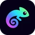
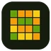

01 / EXPLORAR UNA CONEXIÓNPROJECT FILE — 001
IMÁGENES / CREACIÓN
Project
Foxy.
Un lugar para ver más.
Explora tu colección de imágenes y haz algo nuevo con ella. Un visor con editor de fotos, creador de GIF, collage y comparador.
DESCUBRIR PROYECTOVULITO / ARCHIVO PERSONAL DE SOFTWAREVISTA DE LA APLICACIÓN+
EXPERIMENT / VULITOGLIDEFRAME PACING / FPS LIMITER
CAPTURA REAL / PROJECT FOXY
UNA IDEA. SU PROPIO CAMINO.
02 / EL ARCHIVO COMPLETOCADA PROYECTO, UNA POSIBILIDAD.
Todo comienza por
la necesidad de
comodidad.
Herramientas que uso, cosas que pruebo y software que comparto. Explora cada proyecto a tu propio ritmo.
01
Project Foxy
Imágenes / CreaciónWindows · Linux 02Project Ciel
Inteligencia artificial localWindows 03Glide
Limitador de FPSWindows 04PS1 Recomp
Recompilaciones de PS1En desarrollo 05Twitch Chat Keepalive
Extensión para TwitchFirefox 06Vanish Uninstaller
Desinstalador de programasWindows 07Coreflow
Control de núcleos de CPUWindows 08
Chameleon
Adaptador de mandoWindows 09
PixelPBR
Shader para MinecraftMinecraft · IrisCrear algo es una forma
de conectar con alguien.